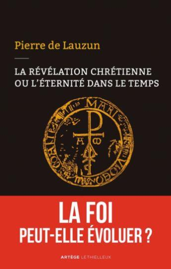
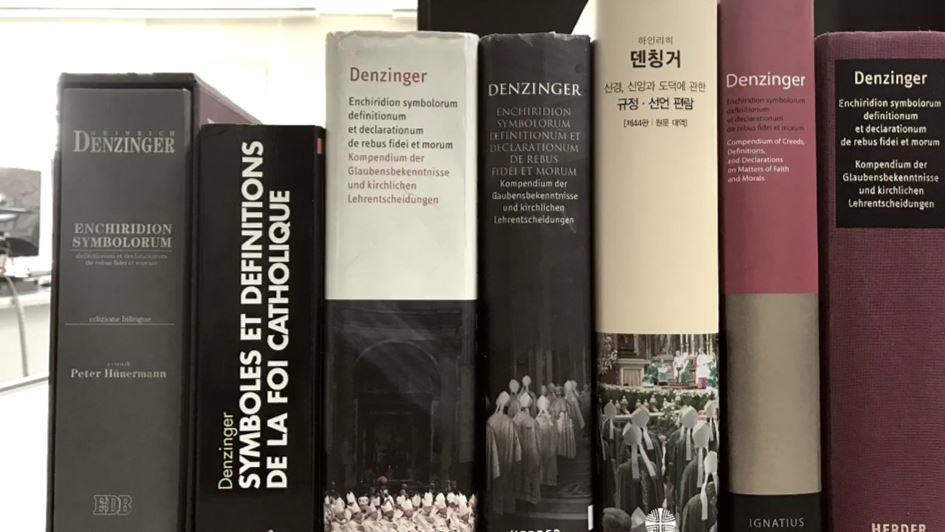

Continuité doctrinale du magistère catholique : le cas de la peine de mort
par Pierre de LAUZUN
CADRE DE RÉFLEXION
J’ai tout récemment abordé dans un livre la question de la continuité de l’enseignement de l’Église, développement dans le temps et dans l’histoire de la Révélation d’un Dieu éternel (« La révélation chrétienne ou l’éternité dans le temps », Artège Lethielleux 2018). Le message biblique vient d’un Dieu infini, qui transcende tous nos concepts ; mais ce Dieu s’y est exprimé pour nous à travers le langage humain, et ce message se présente comme langage de vérité. Cette vérité vise l’objet de la révélation, la foi et les mœurs (morale) ; mais évidemment pas des notions scientifiques ou sociologiques. Cela dit le mot de vérité est à prendre au sérieux : cela veut dire que le langage humain qui est utilisé est capable de porter des vérités durables à son niveau. Les sources en sont les Écritures et la Tradition (sachant que la Tradition bien comprise est ce qui a été transmis avec le dépôt de la foi et pas, comme certains le pensent aujourd’hui, un corpus évolutif).
Ce message, cette parole, ont fait ensuite l’objet de ce qu’on appelle un développement. En effet, d’une part il y une compréhension toujours meilleure de son sens ; d’autre part, des questions nouvelles sont constamment posées par l’évolution de la société humaine, des questions scientifiques au sens large mais aussi des questions liées à la vie commune et son développement culturel et institutionnel (politique et économique). Mais comme ces énoncés successifs se présentent comme énoncés de vérités, il ne s’agit pas, comme certains l’expliquent, de passer des textes anciens au filtre de philosophies successives et contradictoires pour en tirer chaque fois des idées différentes, mais d’un développement cohérent dans le temps, produisant des énoncés dont la validité et la compréhension persistent à travers le temps. Les énoncés nouveaux ne résultent pas d’une décision arbitraire modifiant les idées et préceptes antérieurs ; ils se dégagent comme la mise en évidence de vérités contenues dans la révélation, authentifiées par le magistère, et cohérentes avec les énoncés antérieurs.
Cela implique l’affirmation de la capacité de tous ces énoncés à transmettre une vérité permanente ; mais cela n’exclut pas qu’il soit bon, ou même nécessaire à l’occasion, de les formuler en termes plus précis. Il est évident que la crédibilité du magistère dépend de cette continuité. Sinon, il n’énonce pas une vérité permanente autant qu’il puisse le faire, mais ne donne qu’un repère transitoire. Mais naturellement, et le point est essentiel, le degré d’autorité de ces énoncés est très variable selon les circonstances de leur énonciation. La prétention à la vérité permanente n’a de sens que pour les énoncés manifestement produits à cet effet.
J’ai par ailleurs analysé dans ce même livre les cas où des évolutions pouvaient apparaître contradictoires avec cette cohérence dans le temps. Sur la base du recueil des textes du magistère qu’est le Denzinger, ils me paraissent principalement au nombre de trois : la condamnation ancienne du prêt à intérêt ; le passage de la condamnation de la liberté des cultes au XIXe siècle à un concept de liberté religieuse sous Vatican II ; et enfin l’adage « pas de salut hors de l’Église ».
Notons que dans les deux premiers exemples, on n’est sans doute pas dans des cas de magistère infaillible ; mais leur importance historique a été et reste considérable. Ce qui m’est apparu alors est que l’évolution, quand elle est réelle, a dépendu de deux types de prise en considération. C’est en premier lieu parce qu’intervient une dimension qui n’est pas liée à la foi et aux mœurs : l’évolution des connaissances économiques pour le prêt à intérêt, des développements de la base juridico-politique de la société dans le cas des droits et libertés. C’est en second lieu parce qu’est apparu le besoin de mieux expliciter les rapports entre plusieurs vérités révélées, jusque-là pas complétement harmonisées. Dans le cas de la liberté religieuse, c’était la prise en compte de la liberté de l’acte d’adhésion à la foi, en regard du devoir de recherche de la vérité et de son respect. Dans le cas de l’adage « hors de l’Église pas de salut », entre le salut universel voulu par Dieu et la médiation unique du Christ à travers l’Église. Ce qui a conduit à des énoncés nouveaux a donc été soit la prise en compte d’éléments extérieurs à l’objet de la révélation, soit une meilleure articulation entre des éléments révélés dont le lien n’avait pas été suffisamment élaboré ; dans les deux cas, en général, face à l’émergence de problèmes nouveaux. Il s’en déduit que la contradiction apparente entre énoncés n’est donc pas véritablement une rupture dans le développement de la Révélation. Je renvoie à mon livre pour l’analyse de ces exemples.
Si on se situe ce cadre, comment analyser le récent changement apporté au catéchisme à la demande du Pape François, portant sur la peine de mort ?
CAS DE LA PEINE DE MORT : PROBLÉMATIQUE ANTÉRIEURE
Quel était l’état des lieux antérieur ? Aucune source dans les Écritures ne conduit d’abord à conclure directement qu’elle est illicite, au contraire. Certes le décalogue nous dit « Tu ne tueras pas » mais ce précepte fait partie de la Loi mosaïque qui prévoit des peines de mort pour de nombreux cas. Bien sûr ces prescriptions ne sont plus considérées valides en soi, mais le fait est que la Loi, donnée par Dieu, ne voyait aucune contradiction entre le précepte de ne pas tuer, qui s’adresse aux individus, et l’application de la peine de mort par une autorité légitime en cas de crime grave. Et le Nouveau testament ne contredit en rien l’Ancien sur ces points. Même le jugement et la mort de Jésus ne conduisent pas à une remise en cause de la peine de mort, tout au contraire (ce pouvoir est reconnu par Jésus à Pilate, alors même que ce dernier en fera un usage inique).
Ensuite, et comme le notait la précédente rédaction du Catéchisme, la Tradition est largement unanime à reconnaître la licéité de la peine de mort avec, comme on l’a vu, de solides bases dans la Révélation. Il est à noter en outre qu’on ne se fondait pas sur le seul besoin pratique de mettre un criminel hors d’état de nuire ou de dissuader les candidats, mais d’abord sur le droit du pouvoir politique, reconnu par la Bible, de punir des coupables, punition qui était considérée comme nécessaire.
Par ailleurs il n’y a aucun fait nouveau qui ait émergé depuis (en dehors de l’évolution du sentiment public dominant) et qui remette en cause ces raisonnements anciens, cohérents et circonstanciés. Les arguments des abolitionnistes sont présents depuis longtemps. Il n’y a pas, non plus, de problème de conciliation avec une autre vérité révélée, qu’on n’aurait pas traité. La situation est donc très différente des questions évoquées ci-dessus, la liberté religieuse par exemple. Rien de commun non plus avec l’esclavage, qui n’a jamais fait l’objet d’une approbation explicitée et développée, même s’il a été longtemps toléré comme fait.
En revanche, il est exact que les pontifes récents ont très clairement pris position contre la peine de mort. Mais ils l’ont fait dans le contexte de la société actuelle, compte tenu à la fois de sa capacité à mieux contrôler les criminels, et du souhait croissant de les réhabiliter quand c’était possible. Et ils ont gardé le principe de la licéité de cette peine, sans donc invalider les positions antérieures.
LA MODIFICATION DU CATÉCHISME
Rappelons ce que dit le nouveau texte :
« Pendant longtemps, le recours à la peine de mort de la part de l’autorité légitime, après un procès régulier, fut considéré comme une réponse adaptée à la gravité de certains délits, et un moyen acceptable, bien qu’extrême, pour la sauvegarde du bien commun. Aujourd’hui on est de plus en plus conscient que la personne ne perd pas sa dignité, même après avoir commis des crimes très graves. En outre, s’est répandue une nouvelle compréhension du sens de sanctions pénales de la part de l’État. On a également mis au point des systèmes de détention plus efficaces pour garantir la sécurité à laquelle les citoyens ont droit, et qui n’enlèvent pas définitivement au coupable la possibilité de se repentir. C’est pourquoi l’Église enseigne, à la lumière de l’Évangile, que « la peine de mort est inadmissible car elle attente à l’inviolabilité et à la dignité de la personne », et elle s’engage de façon déterminée, en vue de son abolition partout dans le monde.
Il a été commenté, en outre, dans une lettre aux évêques de la Congrégation pour la Doctrine de la foi. On y notera le souci de montrer une certaine continuité malgré l’impression de rupture que donne d’emblée la modification.
Le point central paraît être la considération nouvelle à l’égard de la dignité humaine aujourd’hui. S’y ajoute un rappel des progrès des systèmes de détention ainsi qu’une conception nouvelle du sens des sanctions pénales (qui ne serait plus considérées qu’en vue de la réhabilitation du criminel), ce qui peut paraître ne faire référence qu’au seul contexte actuel, supposé acquis définitivement. En revanche la phrase suivante affirme que la peine de mort est inadmissible, ce qui semble être une affirmation à valeur permanente. On remarquera qu’aucune allusion n’est faite à un élément essentiel de l’ancienne conception – la notion de punition – et, a fortiori, à l’idée d’expiation. Dans ce contexte il n’est pas surprenant que le texte ait fait l’objet de débats intenses.
Je n’évoquerai pas ici la question de son degré d’autorité : il serait très surprenant que la simple modification d’un passage du catéchisme ait valeur de proclamation solennelle infaillible. Mais l’importance de la décision, demandée par le Pape, mérite considération.
LECTURES POSSIBLES
Il semble, pour simplifier, que ce Catéchisme modifié puisse faire l’objet de trois interprétations possibles :
1. Première compréhension (en continuité) : « Le contexte moderne est tel que la peine de mort est actuellement inadmissible. Mais ce pourrait être différent dans d’autres contextes. »
Avantage : il y alors continuité potentielle avec la doctrine antérieure.
Inconvénient : cette lecture n’est pas tout à fait cohérente avec la formulation du dernier paragraphe. Encore qu’on pourrait soutenir que le terme « inadmissible » est distinct de « mauvais » et peut ne se référer qu’à un contexte précis, actuel, sans impliquer de valeur absolue et permanente.
Une variante consisterait à dire qu’on n’exclut pas que la peine de mort soit possible dans d’autres contextes différents du nôtre, mais qu’on considère qu’il est désormais acquis que cette peine est choquante en regard du respect dû à la vie. Cette variante conduit aux mêmes remarques : elle est plus cohérente avec le dernier paragraphe du texte, mais elle rend moins bien compte des développements passés.
2. Deuxième compréhension (évolutive) : « On n’y voyait pas encore clair dans le passé mais, outre l’efficacité nouvelle des méthodes de détention, les progrès de la conscience humaine sur la dignité de la personne ou sur le sens des pénalités sont tels qu’on a enfin compris que la peine de mort était inadmissible en soi ».
Avantage : elle est plus cohérente avec le texte.
Inconvénients : il y a d’abord rupture manifeste avec la tradition. Ensuite on s’appuie pour cela sur une notion de conscience d’époque. Mais une telle conscience peut changer à nouveau. On peut par exemple redevenir sensible à l’horreur des crimes commis et à l’auto-dégradation du criminel. Faudra-t-il alors changer à nouveau le texte ? Mais quel est le sens d’une affirmation magistérielle soumise au sentiment de l’époque ? Les affirmations précédentes étaient aussi intemporelles que la nouvelle ; si elles peuvent être caduques, l’actuelle peut l’être aussi un jour.
En outre, en conséquence, une telle ligne de raisonnement impactera inévitablement d’autres affirmations de l’Église, qui seront suspectées de pouvoir être modifiées, elles aussi, en fonction de l’évolution du sentiment public. Le risque est aggravé en l’espèce par le fait que la notion de dignité sur laquelle on se base (notion peu utilisée traditionnellement et donc peu balisée doctrinalement) reste assez ambiguë à ce stade. Prenons l’exemple de l’euthanasie.
Certains proclament sous ce nom un « droit à mourir dans la dignité ». ¨Pour eux, la dignité c’est de mourir. Et ils peuvent prétendre qu’un jour les « progrès de la conscience » reconnaîtront une telle liberté de choisir le moment de sa mort. Cette belle conscience moderne ne voit d’ailleurs aucun inconvénient à l’avortement comme à l’euthanasie.
Son utilisation comme guide moral est donc pour le moins risquée. Par ailleurs, sur le fond, est-il vraiment moins digne d’être exécuté parce qu’on a commis un crime abominable, que de passer sa vie enfermé ?
Est-ce toujours plus efficace en termes de conversion et de repentance du criminel dans nos prisons telles qu’elles sont ? Et l’idée ancienne que le criminel avait baissé en dignité (sans la perdre totalement, mais assez pour s’exclure lui-même de la société) était-elle si absurde ? En tout cas elle est passablement biblique…
3. Troisième compréhension (relativisante) « les lectures et interprétations varient selon les époques ; la peine de mort a été admise dans la philosophie et la société de l’époque, dont acte, mais elle ne convient plus à celle de la nôtre ». C’est au fond le modèle dit herméneutique de feu le RP Geffré (que j’évoque dans le livre ci-dessus) et de bien d’autres.
Avantage : paradoxalement il y a apparemment moindre reniement du passé car on admet qu’il avait son sens en son temps mais, en réalité, ce faisant, on lui refuse toute pertinence et pour nous, et en soi.
Inconvénient : cette ligne ruine radicalement la notion de vérité permanente et l’autorité du magistère.
CONCLUSION
Il me paraît en définitive que, malgré ses limites, seule la première interprétation est cohérente avec la logique du développement doctrinal exposée ci-dessus. Mais compte tenu de ses limites et relatives imprécisions même, alors elle ne représente sans doute qu’une phase ou une étape.
À mon sens, il faudrait travailler notamment plusieurs champs de réflexion. D’abord intégrer plus clairement l’idée traditionnelle d’expiation – au moins de punition –, et tout au moins rendre compte de son contenu de vérité, enraciné dans la Révélation. Ensuite, aborder ce qui se passerait dans le cas d’environnements culturels et sociaux très différents du nôtre, ou d’échec moral ou social avéré de notre société, dont les dérives sont mortifères. Enfin, approfondir et compléter par d’autres références (devoir, respect, responsabilité, nature humaine, péché etc.) la notion encore trop floue de dignité. Le travail continue donc.


Partager cette page